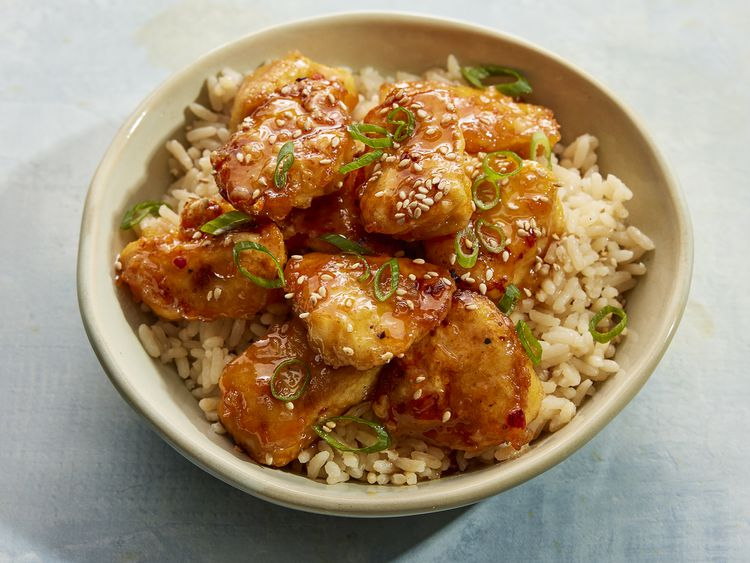

Firecracker Chicken

Description
Firecracker chicken is very similar to sweet and sour chicken, only much spicier (hence the name).
Ingredients
- 2/3 cup cornstarch
- 1 teaspoon ground ginger
- 1/2 teaspoon freshly ground black pepper
- 1 1/2 teaspoons kosher salt, divided
- 3 large eggs, beaten
- 1 1/2 pounds boneless skinless chicken breasts, cut into 1 inch pieces
- 1/4 cup canola or peanut oil
- 3/4 cup honey
- 1/2 cup hot pepper sauce
- 1 tablespoon rice vinegar
- 1/2 teaspoon crushed red pepper (Optional)
- 4 cups cooked white rice
- 1/2 cup thinly sliced scallions
- toasted white sesame seeds, for garnish
Steps
- Preheat oven to 400 degrees F (200 degrees C). Place a rack in the center of the oven.
- Combine cornstarch, ginger, pepper, and 1 teaspoon salt in a large resealable bag or large bowl.
- Heat 2 tablespoons oil in a large nonstick skillet over medium-high until shimmering.
- While oil is heating, transfer 1/3 of the chicken to dish with eggs and toss to coat.
- Transfer to a 9x13-inch baking dish. Repeat with remaining chicken, adding 1 tablespoon of oil to the skillet per new batch (3 batches total).
- Stir together honey, hot sauce, vinegar, crushed red pepper, and remaining 1/2 teaspoon salt in a bowl.
- Bake in the preheated oven until chicken is no longer pink in the center and the juices run clear, stirring halfway through, 25 to 30 minutes.
- Serve over rice and sprinkle with scallions and sesame seeds.